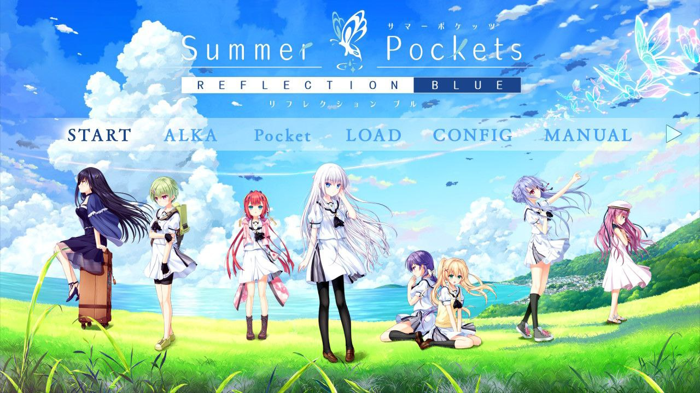

Summer Pockets -REFLECTION BLUE-（之后会把 REFLECTION BLUE 简称为 RB）这游戏从年前玩到年后，游戏记录甚至已经超过了 100h，当然这有开着游戏去做其他事、以及打原文推进速度较慢的原因，但也和这游戏节奏缓慢脱不了关系。先给个总分 7.5 吧，后面详细说原因。

游戏分支
这个游戏各个 End 都很不错，单论某条线没有什么很大的毛病可以挑，但也都存在塞日常撑篇幅的问题，要问我每条线印象还剩多少，大概也就剩下最后故事高潮的那几个小故事了，这里的问题虽然比较大，但还不是最致命的。这个游戏给我体感最不好的地方在于线路的割裂，RB 是后续加入 DLC 的版本，三条线单独看都还不错，但和故事的 TE 关联性都不强，这里强调一下 TE 不需要打这三条线也能进，像我这样打完七条线最后进的 TE，体验就不是很好。
这个游戏的不同分支带给我的感觉就是割裂，虽然是围绕同一个世界观的展开，但是剧情的割裂感十足，少年团的几位出镜率还不错，到紬、静久和鷗，不是自己的线就直接人都见不到了。这个割裂感导致我像是在玩 n 个游戏，每个游戏都有那些让我有些昏昏欲睡的日常，在游戏进入高潮前，缺少勾起玩家好奇心的点，就只能看作者不停的在做铺垫。因为这个游戏整体性不是很好，再给一份每条线的评分：
- しろは 7.5
- 蒼 7.5
- 鷗 8.5
- 紬 7.5
- 静久(RB) 8
- 野美希(RB) 8
- 識(RB) 9
- うみ(RB) 8.5
- TE 9
RB 新增的线在我这里印象都还挺好的，但是因为割裂感的问题，我觉得没有将作品整体的分数抬起来，如果再让我选一次，我可能会选择原版不带 RB 的三条线更快的进 TE（也更省钱）。
当然这个游戏也有很多好的地方，但是很难不剧透说出来。
评价
虽然我对着这游戏的整体构成一顿喷，但每个小故事又都有吸引我的地方，所以我慢慢的把这个游戏给打完了。
家庭的温馨是这个游戏里很重要的成分，游戏花了很多的篇幅来做铺垫，虽然有些啰嗦，但不到扣分的程度。玩这个游戏是很容易勾起一些小时候的回忆的，怀念年复一年的悠长的暑假。
以下剧透
在野美希、うみ和 TE 三条线里家庭是三种气氛，野美希最后接受现实、接受大家的关怀；うみ被破防后治愈；TE 里过家家过成一家人
这个游戏的剧情量庞大，而所有的故事都发生在一个小岛上玩到后期难免有些让人疲倦，大部分故事发生的场景，在开场就已经给你摊牌了，而一路玩到 TE 的过程中又基本没怎么出现新的场景，感觉 Key 社可以把这游戏做的再豪华一点的…
我很喜欢鷗线讲的故事，大冒险真的很有趣，最后得到了儿时“玩伴”的回应是很戏剧的好结局了，而我觉得新島夕不妨把刀发的更直接一些，再把眼光放得更远一些，看看 Atri 是怎么处理这种结局的。
论单线来说，識线的质量看起来是最高的，很不错也很完整的故事，解释了游戏中的很多设定，可惜的是没有把其他线之中的现世与过去连结起来。阴阳两隔的对话，是奇迹还是思念？
给静久线 8 分是因为我个人很喜欢这个结局，但是这线的剧情有点拉跨，我希望能在其中看到像在紬线一样的挣扎，可惜没有施展开拳脚。
其他线不来评价了，感觉不是很值得说…
这个游戏整体的感觉是把夏日的漫长感给刻画出来了，但是缺少一点悠远的味道，这个夏日过去了，主角和我们还剩下什么，留下一些刻骨铭心的回忆，如果能做出这个感觉来，想必也不会塞那么多日常戏了。也是因为缺少了这个感觉，我觉得这本游戏给我留下的感觉不能伴随我度过太漫长的岁月。
以下剧透
感觉这个游戏在扯出 TE 的设定以后自己没有控制住剧情，因为新元素过多，方向盘握不住了，只好一脚刹车，刹住感情高潮了。这里面有太多没来得及解释的东西，比如鳴瀬しろは的母亲和鏡子的故事，鳴瀬しろは和主角再一次相遇的故事等。我在 TE 中所期待的是酣畅淋漓的情感宣泄，可是这一脚刹车让感情收住了，把前面几十个小时所铺垫的感情给收住了，可惜可惜。
杂谈
因为花了很多时间打这本游戏吧，同样的时间差不多能看掉四五十本电影或者十几二十几部番剧了。所以还是希望这种题材的作品能珍惜玩家的时间，我们仔细阅读每一句台本，不是来看这些怎么样都好的日常的。
在打通之后，我马上打开了搁置已久的ファタモルガーナの館，真实的感受到了在感情渲染上的差距，本身 TE 应该是整个游戏情感达到最高潮的部分，但 Summer Pocker RB 剧本在语言上的冲击力远不及 ファタモルガーナの館，直观感受是脚本缺少锤炼吧。
看有的旮旯 game 排名，Summer Pocker RB 很高啊… 让我来评可能就得滑铁卢了，整体不过不失，雲龍寺魁是很有潜力的脚本作者，期待未来更好的发挥。